Week 13 · Semester 1 · 8 – 13 Nov
Interface or Language
Trigger
The question everyone kept asking
My lecturers kept asking whether I was building an interface or a programming language. This week I decided: a programming language is more interesting, and I had multiple experiments leading up to it. I, as the designer, am inventing a new gesture programming language.
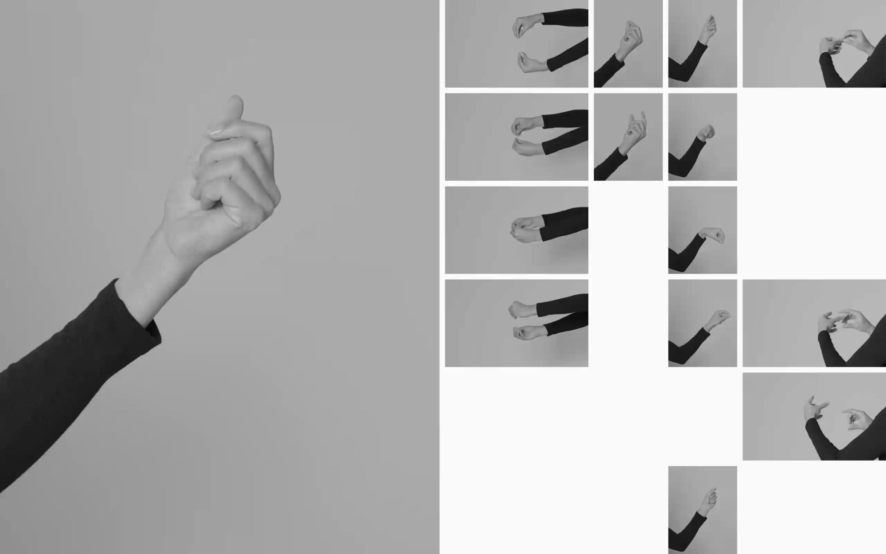
Modem, Coded Gestures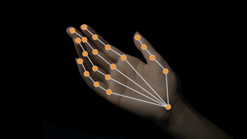
Apple, WWDC20: <a href='https://developer.apple.com/videos/play/wwdc2020/10653/' target='_blank'>Detect Body and Hand Pose with Vision</a>
Feedback
Feedback Breakdown
Andreas asked me to tweak my research question for clarity. Why so specific? What do syntax and semantics mean here? What is a gesture language? Does “seeing” mean literally seeing? He suggested keeping AI, agency and authorship aside first, and said it was fine to leave the AI part out. What I want, put simply, is a programming language controlled by gestures, for designers working on generative visuals.
He had also questioned my claim that prompts have a grammar nobody designed. I decided not to make that claim. I had meant AI prompting, not programming languages, but his question helped me see the difference.
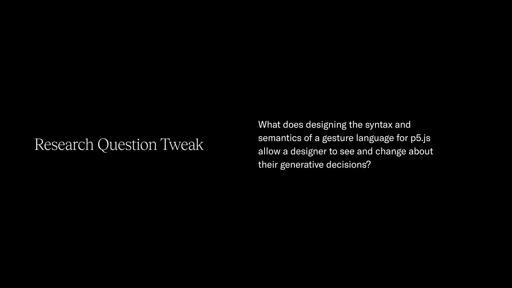
References
Why gesture?
Rebuilding the literature review, three sources became the core. Labanotation helped me understand how to create a language for the body, which is closely linked to the gesture-based programming language I am trying to create. Kiefer's paper shows what that kind of programming could look like and how the code might be made, as a contrast rather than a model. Pavlovic helped me understand the relevance and grammar of gesture. I also felt I needed semantics from graphic design or computation in design to bridge gesture, programming language and visual output.
Then the bigger question: why gestures at all? My first thought was that we are moving towards more gesture-based ways of interacting with computers, like Vision Pro, Meta glasses and physical AI. For performance that is straightforward, but what about designers and creative technologists? It could be anything, brainwaves for example, so why gestures? I looked at IDEO's Why gesture is the next big thing in design, Apple's guidelines on gestures, and Modem's Coded Gestures.
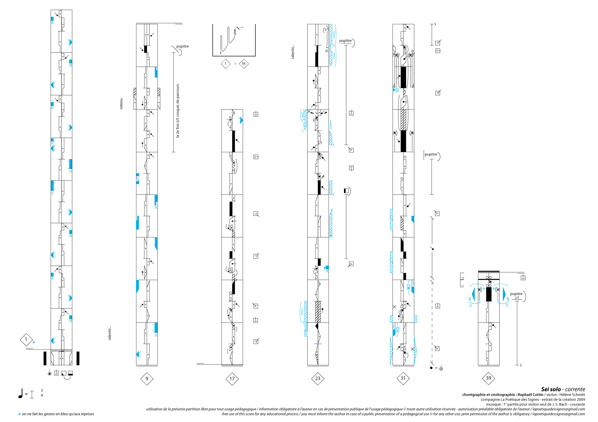
Experiment
A for loop by hand, and AI as compiler
Idea. After the L-system, a fuller grammar: start with one piece of programming, a loop.
Why. I was really focusing on grammar, because whoever gestures has to understand what they are writing to produce a line of code.
How. Opening a fist writes the start of a for loop, signing 3 sets the count, and a clap compiles it into p5.js, which draws three rectangles. The same day I tested Gemini as the compiler: when a gesture is recorded as multiple inputs, the LLM makes sense of them and removes what is repeated or an error.
Reflection. Writing code this way is not as simple or fast as typing it, but it felt more intuitive, a way of writing code I didn't know could exist. The understanding has to be there before using it. It was one baby step towards a language.
Why a for loop. A for loop is what we commonly use to create a grid system in p5.js, so I wanted to start with that.
- Writing a for loop by hand, then clapping to compile
Process
Week 13 work check
This was the last week of classes before independent study: a group dissertation consultation, then the assessment preparation briefing and a pre-submission check-in in a small group. For the check-in I reported where each part stood. For the CPJ, I was catching up. For the catalogue of making, I was archiving all my works so I could move on to the critical journal. For the dissertation, I was working on the literature review.
I also planned every day until the deadlines. Week 13: the catalogue of making, the introduction, the literature review, and starting the critical journal. Week 14: develop a prototype, then lock in and finish the dissertation (due at the end of the week). Week 15: clean up the catalogue, build the website, print a glossary of terms and a gesture manual, test the table setup, and lock in the CPJ.
Questions I brought
AI in my system: do I need AI at all? Is recognition only (for example, Teachable Machine classifying my signs) a good enough reason?
Language or interface: is “order changes the result” enough to make it a language? A then B gives a different visual from B then A, and the same signs in the same order give the same visual. (My own answer: yes, A then B should give a different visual.) Or does it also need a program I can see, save and edit?
Literature review structure: Writing the body / Reading gesture / Language as an authored system / the gap.
What should I focus on
My notes on the last slide, as written:
Evolution of work
Understand what a programming language is
The easier the programming language → the more abstract
JavaScript also needs to be programmed
Two different levels (DNA): gesture level → sequence of symbols; symbols → generative system
These were my own conclusions. By “two different levels” I meant that the language happens on two levels: first I have to translate the gesture into signs, then translate the signs back into code to run.
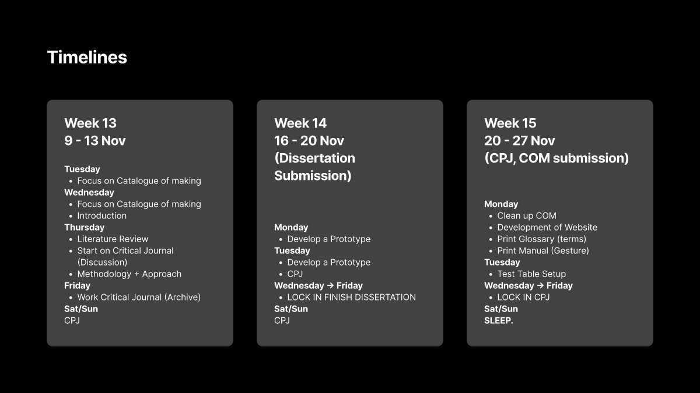
Timeline to the end of semester
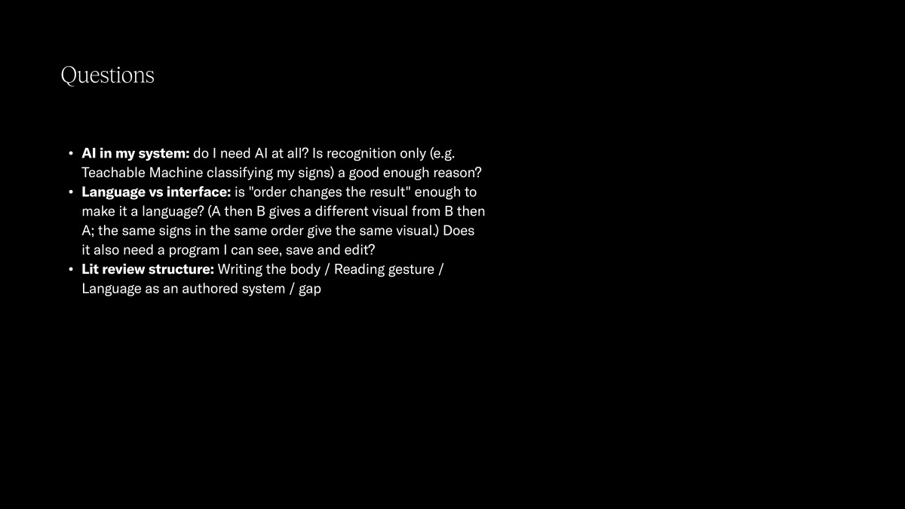
My questions
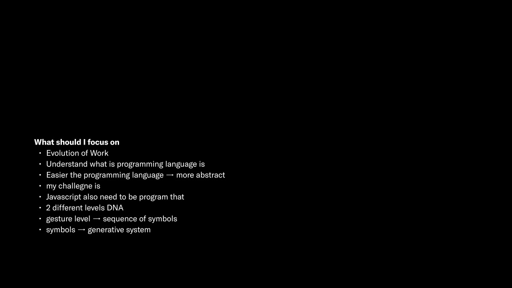
What should I focus on
Dissertation
A new question, a literature review in three parts
My working question became: what does designing the syntax and semantics of a gesture language for p5.js allow a designer to see and change about their generative decisions?
I rebuilt the literature review in three parts, each ending with the gap it leaves and the link to the next.
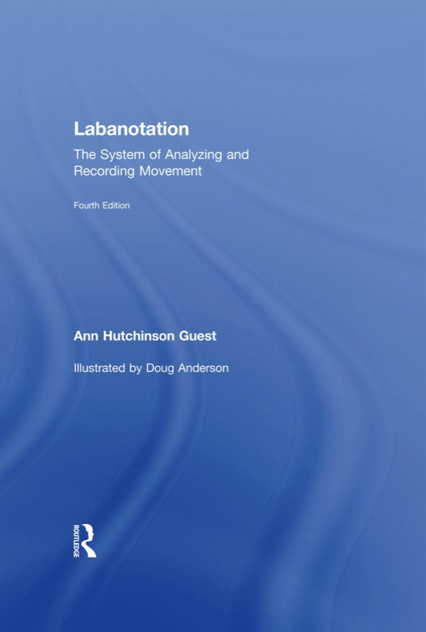
Guest, Labanotation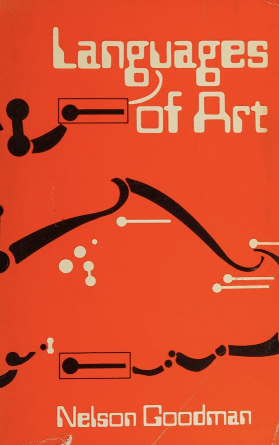
Goodman, Languages of Art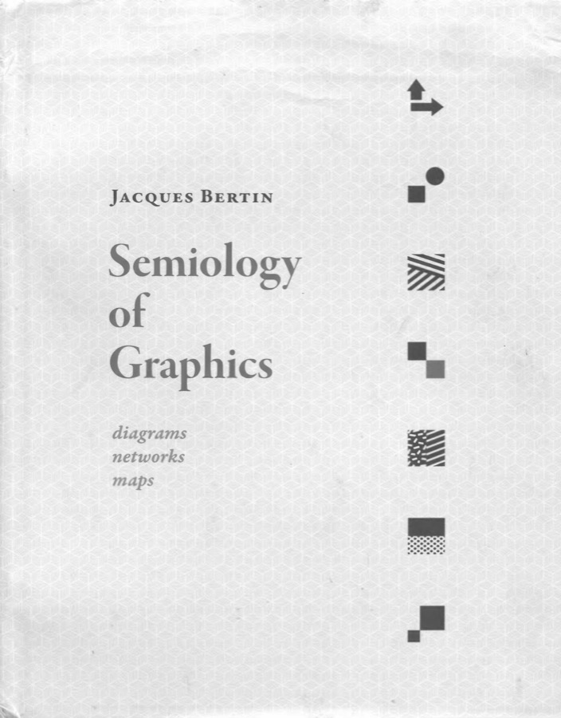
Bertin, Semiology of Graphics
Writing the body. Labanotation splits movement into body, space and time, so a notation decides what counts and what is ignored. Goodman's Languages of Art gives the test: a notation needs signs that don't overlap and can be told apart. Movement can pass it because the designer builds the distinctness (eight directions), and once a notation is standard, its arbitrary choices start to look natural (217). Bertin's Semiology of Graphics covers the other end, the image: his visual variables split a mark into parts the way Laban splits movement. The gap: Labanotation is a record a person reproduces; it doesn't run. Meaning narrows from hand to code, where each sign is fixed, then widens again from code to image.
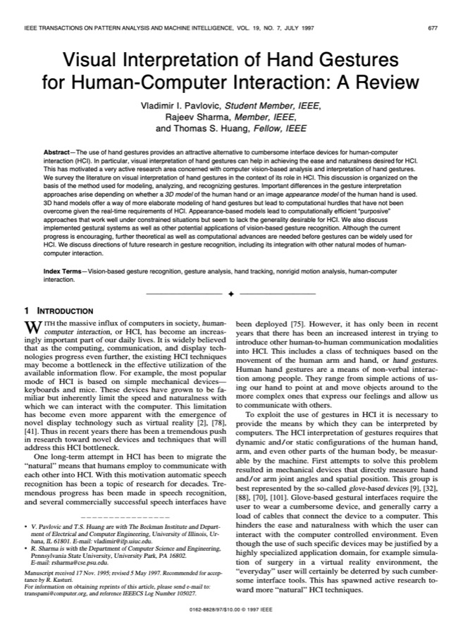
Pavlovic, Sharma and Huang, Visual Interpretation of Hand Gestures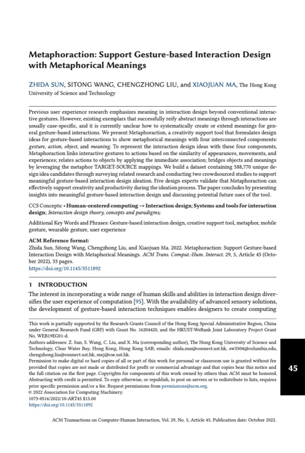
Sun et al., Metaphoraction
Reading gesture. Pavlovic shows that no two performances are the same and that gestures have phases (preparation, stroke, retraction), so a language has to cut movement into units and decide where one ends. Recognition can use a grammar, but that grammar is for the machine, not something the person writes with. Metaphoraction shows people shaping gesture systems by demonstration. The gap: a machine can read gesture, but the person doesn't author the grammar.
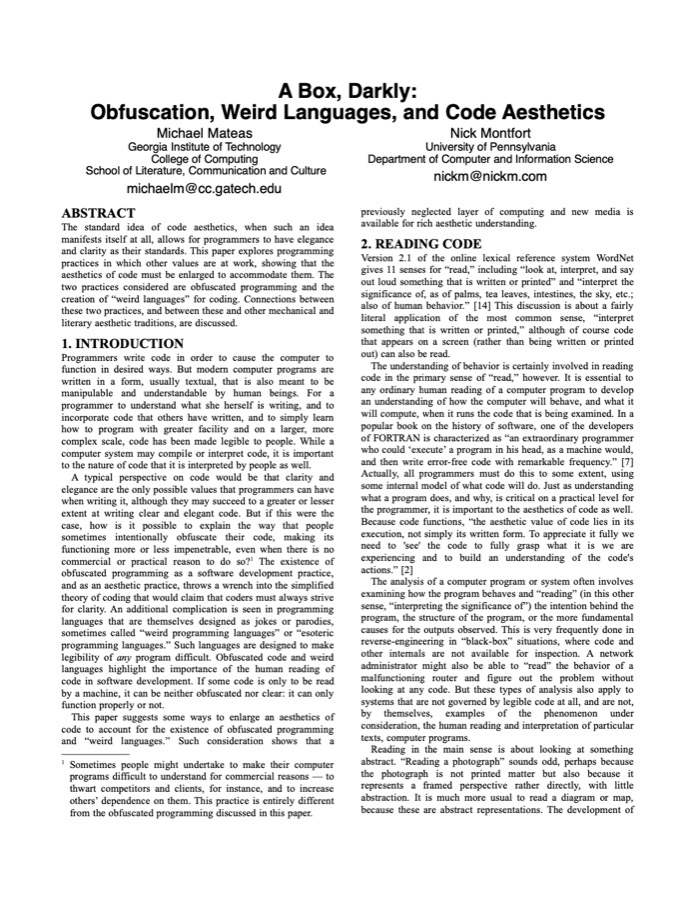
Mateas and Montfort, A Box, Darkly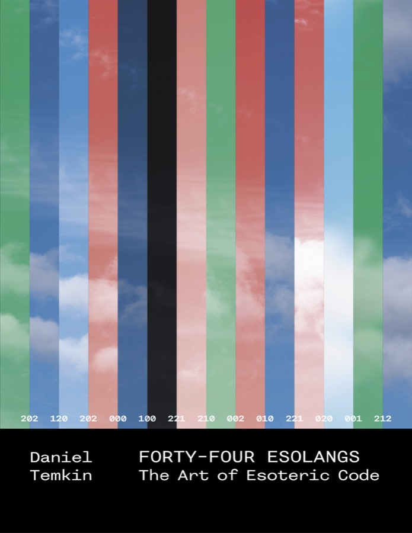
Temkin, Forty-Four Esolangs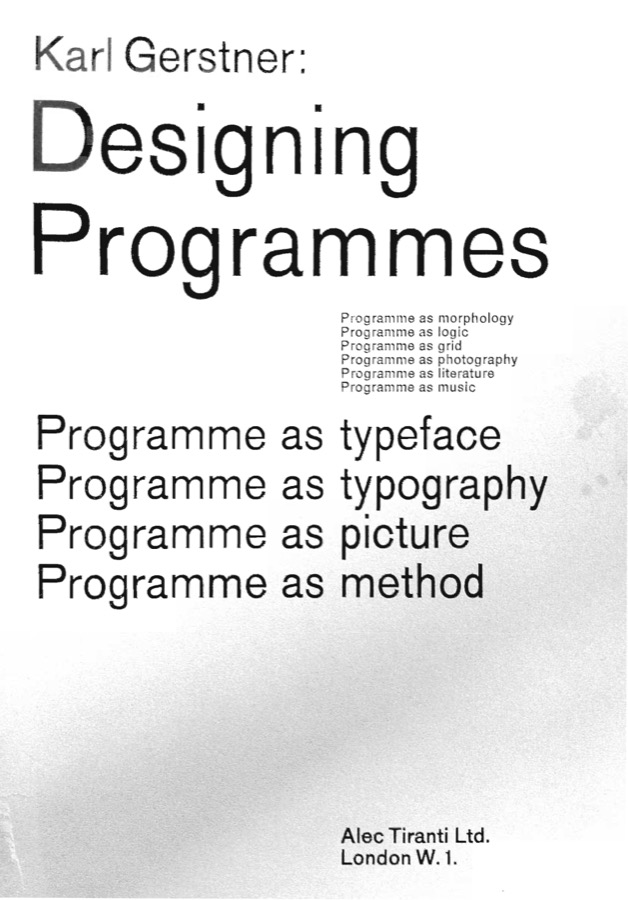
Gerstner, Designing Programmes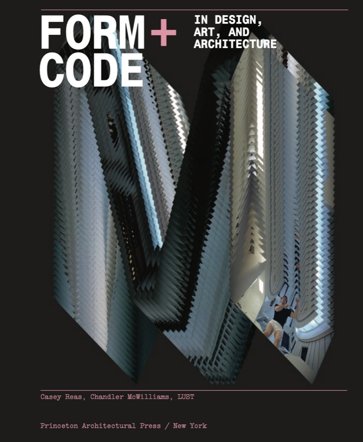
Reas, McWilliams and Barendse, Form + Code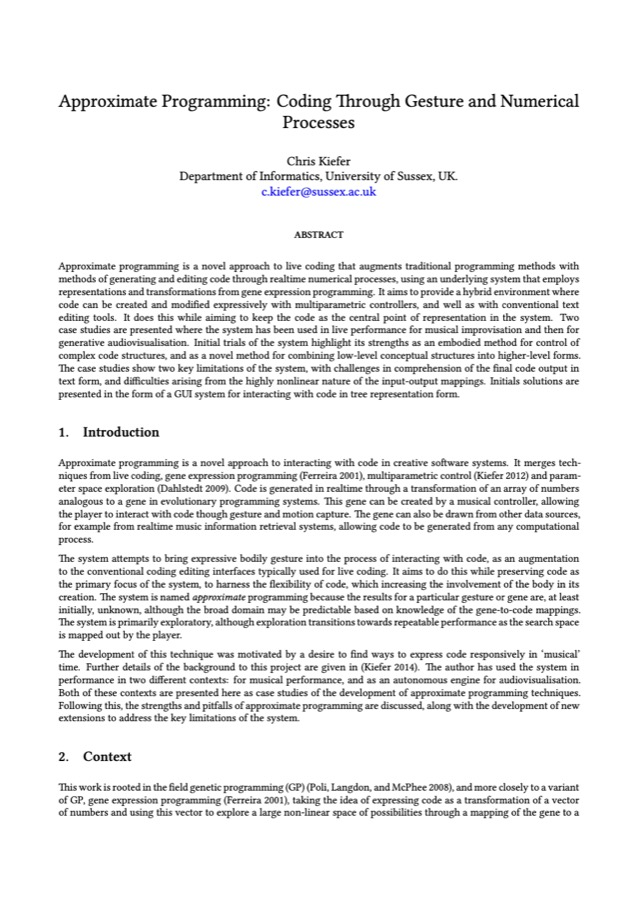
Kiefer, Approximate Programming
Language as an authored system. Mateas and Montfort treat inventing languages as a creative act. Temkin defines it: syntax decides what counts as code, semantics is what it does. Gerstner's Designing Programmes and Form + Code show that authorship lives in rules. Kiefer's approximate programming also codes through gesture, but there the gesture arrives as a number, where in mine it arrives as a sign; Auraglyph is closer, but its users work with the tool's nodes, not their own signs.
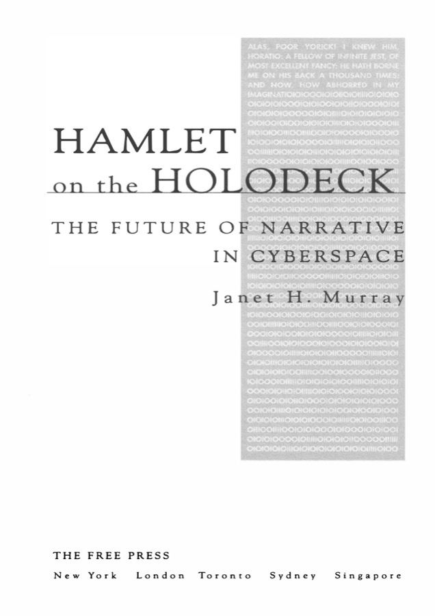
Murray, Hamlet on the Holodeck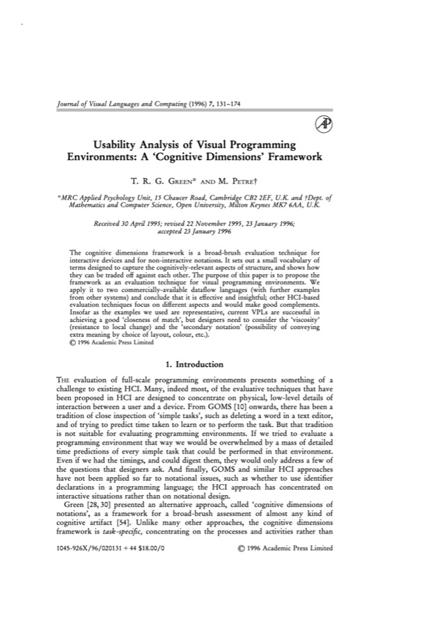
Green and Petre, Usability Analysis of Visual Programming Environments
Agency vs authorship. Setting up the rules is authorship; gesturing and judging whether the output matches my intention is agency, so I am both author and interactor. Green and Petre's criteria for judging it (viscosity, progressive evaluation, visibility) only apply if there is a stored program to go back to, which brings back the interface-or-language question.
“What's open: a hand language whose signs, order and meaning the designer sets, that runs, and whose meaning shows in the image it makes.”my work check slides, Week 13
Thinking about agency, the moment the work felt mine was when I created the code: setting up the system, its rules and logic. While gesturing, I decide in the moment what my intentions are, and I can tell it worked if the visual output matches.
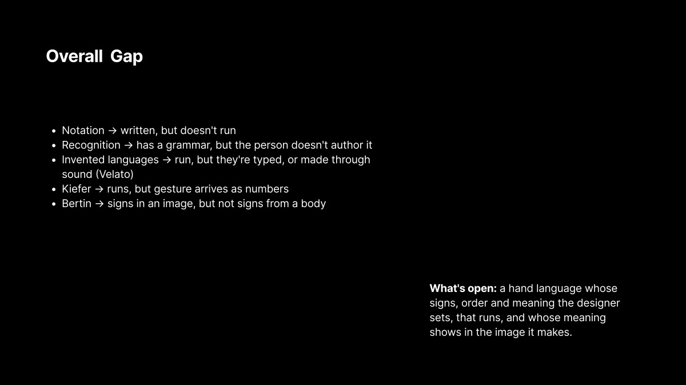
The overall gap
Reflection
Reflecting
Framing. I committed to a language over an interface, and to the designer as the person inventing it.
What I learned. Gesturing code is slower than typing it, but more intuitive, a way of writing code I didn't know could exist, as long as the understanding comes first.
In the moment. Using Gemini as the compiler was actually really helpful. Hands make random or sudden movements, and having AI to facilitate that was beneficial: it reduced the noise and acted as a level of help, rather than taking full control.